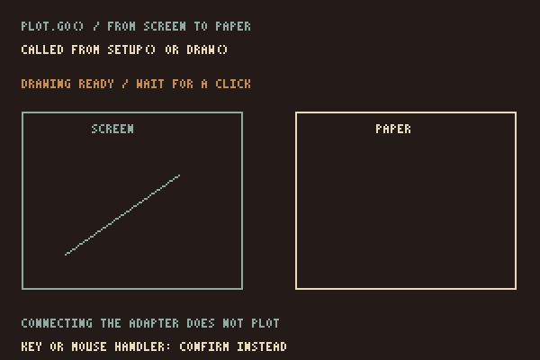
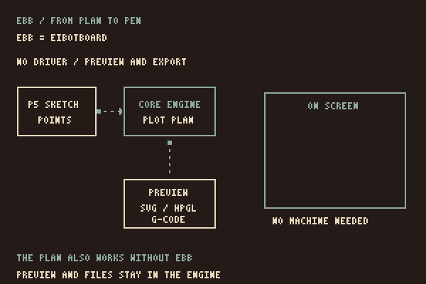

How p5.penplotter works
How a supported p5 shape becomes recorded geometry for the pen.
Screen and paper
You draw with p5.js. The supported plot.line(), plot.circle() and other shape calls draw on the canvas and also record points for the pen. vanilla.penplotter cleans up those points, plans their route and supplies the machine driver.
The adapter converts canvas coordinates to millimetres using the width and offset passed to createPlot(). A p5 circle takes a diameter; the core receives a radius. A point becomes a short dash on paper.
What is recorded
The plot keeps the shapes recorded since the last plot.clear(). To record one frame, clear at its start. For a stable drawing, use noLoop() and redraw when you choose a new seed.
Screen transforms such as translate() and rotate(), p5 fill and stroke styling, and changes to rectMode() or ellipseMode() are not recorded. The pen geometry uses corner rectangles and centred ellipses. Use explicit coordinates and the plot's engine tools and layers for paper.
Hatch, crosshatch and stipple are generated by the core and drawn back onto the canvas. They are pen strokes, rather than p5 colour fills. Text, general Bézier curves and arbitrary p5 sketches are not captured.
Starting a plot
When plot.go() is called from setup() or draw(), it waits for a click on the drawing. That click starts a plan from the recorded geometry, asks the browser for a serial port when needed, and runs the supplied driver. A click while plotting requests a stop. Calls from a key or mouse handler ask for confirmation instead.

The driver comes from vanilla.penplotter; this adapter contains no machine protocol. Direct plotting has been physically tested on an iDraw HSE / A2 with EBB firmware 3.0.2. The same core can preview and export a drawing without a connected plotter.
Connecting the adapter
installP5Penplotter(p5, PlotterEngine, { driver: Ebb });Here, Ebb is the driver module imported from vanilla.penplotter/src/driver/ebb.js. EBB means EiBotBoard: the hardware controller that operates the plotter's motors and pen lift. The JavaScript driver translates a plan into commands and sends them through Web Serial over USB to a compatible controller.

The connection adds helpers to the p5 prototype for global and instance mode. createPlotterEngine() exposes the core, while drawRoute() draws its planned routes in p5. Pen-up travel belongs to the core preview.
The adapter checks its minimum dependencies, not every possible version combination. The site's examples load current source from the neighbouring core repository. For your own project, pin both libraries and test the pair. The Setup page shows the load order and wiring.
What stays in the core
Geometry, SVG import, cleanup, route planning, file exports, machine profiles and drivers live in vanilla.penplotter. Fixes belong there rather than being copied into the adapter. See the core architecture for its current scope.